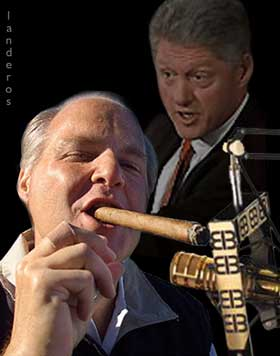

|

The compassion of Rush Limbaugh
If Bill Clinton were a drug addict, here's how Rush might spin it.
- - - - - - - - - -
by Bill McClellan
 OTS to talk about today. You all know already that Bill Clinton, our former president, has admitted an addiction to prescription drugs. OTS to talk about today. You all know already that Bill Clinton, our former president, has admitted an addiction to prescription drugs.
It's interesting to see the way the liberal media are playing this. I'm looking at a copy of the St. Louis Post-Dispatch, the Saturday, October 11th, edition -- the day after the big announcement. Well, the story is on Page 2, and right next to his photograph, in large boldface print, is the following quote: "I take full responsibility for this problem."
That's interesting, folks, because if you look at his actual statement -- not what the liberal media say he said, but what he really said -- you get a different take on it. First, he says he's got back problems. So he's blaming it on that. Then he says he had surgery, but the surgery wasn't successful. So he's blaming it on the doctors. Then he says the pain medication was addictive. So he's blaming it on the pharmaceutical companies. Folks, he blames it on everybody but himself! But as long as he puts in that obligatory line about taking responsibility, that's what the liberal media are going to grab: Clinton takes full responsibility!
Here's another interesting thing in his statement. I love this one. He says a lot of athletes have admitted drug problems and have been treated like heroes. Huh? Can you name one athlete who admitted a drug problem and was then treated like a hero? How about Darryl Strawberry? Maybe liberals thought Strawberry was a hero, but I don't think most of us felt that way. And then Clinton says, "I refuse to let anyone think I'm doing something heroic here."
You want to know what that's about? He's telling his friends in the liberal media how he wants this thing played. He wants to be called a hero for admitting his problem. That's why liberals confuse so many people. They mean the opposite of what they say.
And I'm telling you folks, the liberal media are going to do it. He's going to be a hero. I can already see the spin on this: Clinton accepts responsibility! Doesn't blame others!
I know you don't believe me -- "Rush, not even the liberal media can pull that one off!" -- but just watch. I'm telling you. Just watch.
Another thing. I heard him on the radio the other day. He was whimpering, "I want to tell you about this because you're like family to me." If there are any liberals out there listening, I'd like to ask you this: Weren't you people like family six weeks ago? How about six months ago? Two years ago? But he didn't feel the need to tell you then, did he? So why now? You think it could be because he's been caught? Because his high-priced attorney has told him he'd better act remorseful?
Speaking of getting caught, have any of you read about those tapes and e-mails the cops have? Heh, heh, heh. You won't read them in the mainstream press, or hear about them on the Clinton News Network, but they're a hoot. He sounds like he's auditioning for a part in the next Cheech and Chong movie. He calls money "cabbage," and he refers to his favorite pills as "blue babes." It's always interesting to hear the way somebody talks when he thinks nobody is listening.
I know what liberals are going to say: "This is a time for compassion." Let me be very clear about this, folks. I have compassion. But my compassion is for all the people who believed in the guy. He was their shining star. He could do no wrong. But you know something? I probably don't have to worry. Because his followers are going to still believe in him. That's the thing about liberals! You can't convince them! You can show them the facts. You can say, "Look, here is what he really said, and here is what he really did," but they don't want to know the truth. That's the big difference between them and us. Liberals are afraid of the truth.
From the St. Louis Post-Dispatch

|